MOTORWORKS — Halloween Edition
Play locally: http://localhost:3000 · LAN: http://192.168.1.89:3000 (Vite binds 0.0.0.0:3000) · In-game docs viewer: http://localhost:3000/docs.html
npm install
npm run devA third-person 3D open-town car factory, customization and action game in the browser: order a car at the lobby kiosk, watch it get built across five animated assembly stations, then drive it through an autumn small town at Halloween, up a foggy hill to the Old Town Cemetery. You can also steal cars, run from the police, and find a handful of easter eggs. Built with Three.js r170 for rendering, cannon-es for physics (raycast vehicle), Blender 5.2 headless Python for every 3D model, and WebAudio for all sound.
> Phase 2: Major Expansion & Realism Overhaul. The second build pass added demographic-accurate NPC voices (kids, men, women), fully enterable buildings with furnished interiors, a rebuilt Motorworks plant with physical pick-and-place robots and a live Jumbotron, seated drivers in every vehicle, a road-graph traffic AI with physics safety clamps, police foot chases, weapons, light switches and breaker boxes, doorbells and burglary, and a fuel system with gas-station refuelling. Section 6 F–O covers the new systems, and §7 lists the 10 new QA checks.
1. Architecture
| Layer | Files | Notes |
|---|---|---|
| Boot / game loop | src/main.js | Game states: title → play ⇄ kiosk ⇄ paused, busted. Fixed-step physics (1/60 s, up to 12 sub-steps, frame-rate independent), post-processing (bloom), automatic quality fallback on slow GPUs. Exposes window.__MW QA hooks. |
| Core | src/core/* | input.js (keys, mouse buttons, pointer lock, key clearing on unlock/blur), assets.js (GLB loader + stats), physics.js (cannon world, heightfield, COL_ colliders, velocity/spin clamps + out-of-bounds watchdog), broadphase.js (spatial-hash broadphase for thousands of static colliders), navGraph.js (pedestrian nav graph + A\*), batcher.js (static batching per material per 64 m cell, vertex-colour folding), bake.js (vertex-colour baking of rigid parts), cameraRig.js (orbit / chase / cockpit / over-the-shoulder aim / scripted cams). |
| World | src/world/* | terrain.js (one height function shared by physics heightfield, visual mesh and road ribbons), town.js, buildings.js (enterable-building runtime: hinged doors, switches, breakers, instanced shootable window glass, loot/shop/nav anchors), jumbotron.js (live render-target production screen), cemetery.js, factory.js, atmosphere.js (dusk sky shader, harvest moon, stars, fog, falling leaves, ground fog). |
| Vehicles | src/vehicle/* | carVisual.js (hinged Blender car + paint/livery shader + bolt-on parts + lights), livery.js (canvas-drawn decals projected in car space), vehicle.js (cannon RaycastVehicle, fuel tank, flat tyres, engine damage/smoke/fire), effects.js (skid marks, smoke, sparks, mist). |
| Actors | src/actors/* | character.js (articulated joint rig: walk / run / wave / operate / talk / sit / drive / aim / swing / carry / down / cuffed / panic / reach), player.js (step-up assist, aim strafing, seated in cars), agent.js (nav-path walker with door opening + floor clamping). |
| Systems | src/systems/* | assembly.js (pick-and-place choreography), kiosk.js, roadGraph.js (closed-loop right-hand lane graph), traffic.js, police.js (cruisers + foot officers), npcs.js, combat.js, burglary.js, interactions.js, fuel.js, missions.js, audio.js (dialogue FX chains, engine synth, sirens, procedural radio, gunshots, glass, doorbell, pump). |
| Data | src/data/* | dialogue.json (82 lines, 23 voices, each tagged with a demographic), demographics.js (NPC profile schema, line pools, costumes, 0.68× kids). |
| UI | index.html, src/style.css, src/ui/hud.js | HUD, rotating minimap, wanted skulls, speedometer, order tracker, subtitles and speech bubbles, pause/settings, kiosk panel, telemetry badge. |
| Build scripts | scripts/*, blender/*, tests/* | npm run assets (Blender), npm run dialogue (ElevenLabs / local TTS), npm test (Playwright QA), node scripts/build-docs.mjs. |
Performance work. The first build ran about 2,600 draw calls at 19 fps on the dev machine's AMD Radeon R5 M330. Three changes brought that down:
- Static batching. Thousands of Blender prop meshes are merged per material and per 64 m cell, so frustum culling still works.
- Vertex-colour baking. Civilian and police cars, and every character, are baked into one mesh per rigid part (body, door, rim, limb). Hinges and joints stay animatable.
- Pooled lights. Ten real
PointLights are reassigned to the nearest emissive sources (streetlights, lanterns, porch pumpkins) every 0.3 s.
If the frame rate stays under 26 fps, the game steps Graphics Quality down automatically. Setting the quality by hand turns this off.
Phase 2 performance pass. The enterable interiors added about 2,400 static colliders and 1,000 more batched meshes, which dropped the game to 5–7 fps in headless Chromium. Profiling each system per frame found four problems, fixed as follows:
- Broadphase. cannon's SAP broadphase sweeps static-versus-static pairs, which is O(n²).
src/core/broadphase.jsreplaces it with a uniform spatial hash: statics stay in the hash, and only movers are tested against nearby statics and against each other. Raycasts use the hash too. - Collision matrix. cannon's dense
ArrayCollisionMatrixresets an N²/2 array every sub-step, about 4.5 M entries here. It was swapped for the sparseObjectCollisionMatrix, and sub-steps are capped at 5. - Sleeping. Parked cars sleep until something hits them. Driven vehicles, the player and kinematic traffic never sleep.
- Draw calls. The static batcher now folds every untextured, opaque material into shared vertex-coloured materials (matte, metal and glow) per 64 m cell. Doors, switches, breakers, loot, shop items and mailboxes are baked into one or two meshes each. Furniture no longer casts shadows, and loot beyond 45 m is culled. Draw calls dropped from about 1,950 to about 830.
The result was physics at 98 → 10 ms per frame and rendering at 45 → 20 ms, which brought the frame rate from 5–7 fps up to 26–37 fps in the same headless run.
2. Blender asset pipeline
The models are generated procedurally by blender -b --factory-startup -P blender/build_*.py (npm run assets). blender/mwlib.py writes the geometry in game coordinates (x, y-up, z-forward) and converts it to Blender space, so the glTF +Y up export puts every node exactly where the game expects it.
- Pivots and hinges. Every moving part is its own object, with its origin on the hinge or joint and its geometry offset around it. It carries glTF extras
{hinge, open}or{joint}: - Doors hinge at the front pillar.
- Hoods hinge at the cowl.
- Trunks hinge at the rear deck. The pickup's tailgate hinges at the bottom and the hearse's liftgate at the top.
- Wheels hang from
Knuckle_*(steer and camber) →Axle_*(spin). - The steering wheel sits under a tilted
SteeringColumn. - Robot arms chain
Base → Shoulder → Elbow → Wrist → Tool. - The press
Ram, craneTrolley → Hoist, liftPlatform, scannerLaser_Bar, sliding lobbyPanel_L/R, 8 roll-up garageSlat_*, barrierArm, cemeteryGate_L/R, cryptCryptDoor, and the character joints (head, jaw, upper/lower arms and legs) are all separate pivoted nodes. - No Z-fighting. Panels overlap their body volumes instead of sharing planes. Ground overlays (roads, lots, skid marks) use graded
polygonOffsetpriorities. Text meshes are low-resolution with no bevel. - Collision. Buildings, machines and props export invisible
COL_*boxes, which become cannon static boxes. The gate and garage-door colliders follow their hinged nodes. Tombstones, curbs and the conveyor get explicit boxes. - UVs. World-scale box-projection UVs are written in
bmesh, so bricks and siding tile at a constant size. - Preview renders. Every GLB is also rendered with Workbench for this document. Cars are rendered with their doors, hood and trunk opened, which shows the hinges.
- Interior kit (Phase 2).
build_world.pygained helpers that turn the buildings into hollow, walkable shells: openwall(): walls with real door and window cut-outs. Each wall piece, lintel and sill gets its ownCOL_*slab, glazed openings getPane_*glass, and every opening gets trim frames plus an interior wallpaper skin.hinged_door(): aDoor_*pivot on the hinge line. The swing direction is computed toward the interior, and aCOL_Door_*child follows the swing.light_switch()(Switch_*with a flippableSwitchLever_*) andfixture()(aLamp_Interiormesh plus aLightIn_*light anchor).furn(), which gives furniture its own colliders, andtiles()for the diner's checkerboard.- Anchors for gameplay:
loot(),shop(),spot()(navigation and NPC anchors),Doorbell,Breaker_Box/BreakerLeverandPhone. - Ceiling colliders keep the chase camera inside rooms.
- What uses the kit:
- Houses A and B. Foyer, living room (sofa, rug, coffee table, glowing CRT TV, bookshelf, jewelry box, floor lamp), kitchen (counter, fridge, table and chairs, phone, radio), and front and back doors with steps.
- Moonlite Diner. Walk-in stainless diner car with a checkerboard floor, chrome stools, red vinyl booths, a jukebox, a kitchen pass-through, the register and neon window signs.
- Moonbeam Mart. Aisles, coolers, the counter with register and pump console, jerrycans, and a pump island whose hoses and nozzles swing on hinges.
- Hank's Hardware. Pegboards, tool racks, a workbench, a locked weapon & tool counter and masks, plus the back alley with the fence's dumpster.
- Police station. Lobby desk, wanted posters, a holding cell with a barred
Cell_Dooron a hinge, the evidence lockers and the armory. - Motorworks plant. Red I-beam columns, triangulated trusses, volumetric light shafts, hazard-chevron lanes and a green walkway, safety bollards, two tool cribs, the glass Foreman's Office on stilts with stairs and an observation catwalk, the Customer Delivery Showroom, and a separate
jumbotron.glb. - Characters. Gendered hair (
Hair_Long,Hair_Ponytail,Beard,Moustache), aSkirt, the kid costumesCostume_GhostandCostume_CapewithMask_Super, andHold_CandyBag. - Props.
Weapon_Pistol/Shotgun/Crowbar/Launcher(each with aMuzzle_*anchor),Item_Jerrycan/Ammo/MaskandLoot_TV/Register/Jewelry/Toolkit/Evidence/CandyBowl/Radio/Cash, each carrying its value and weight in glTF extras.
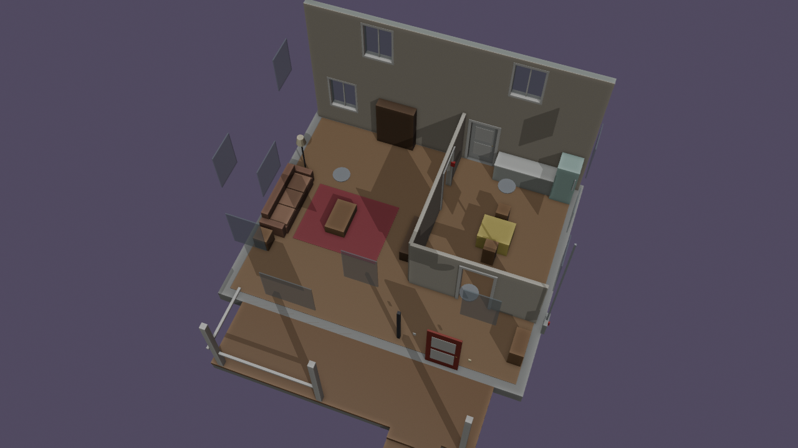 | 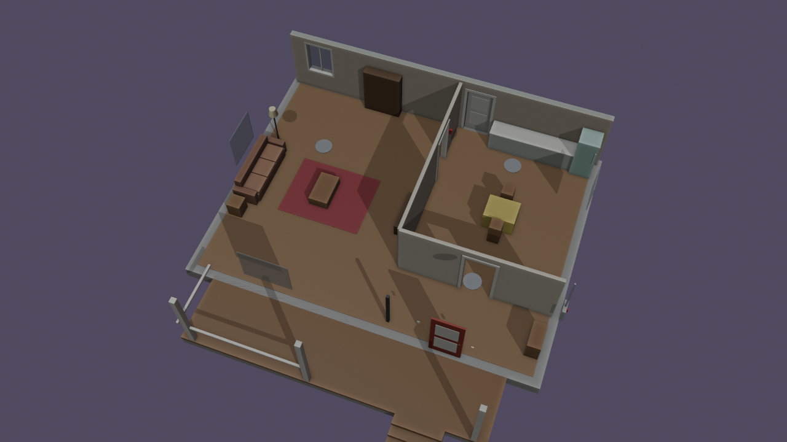 | 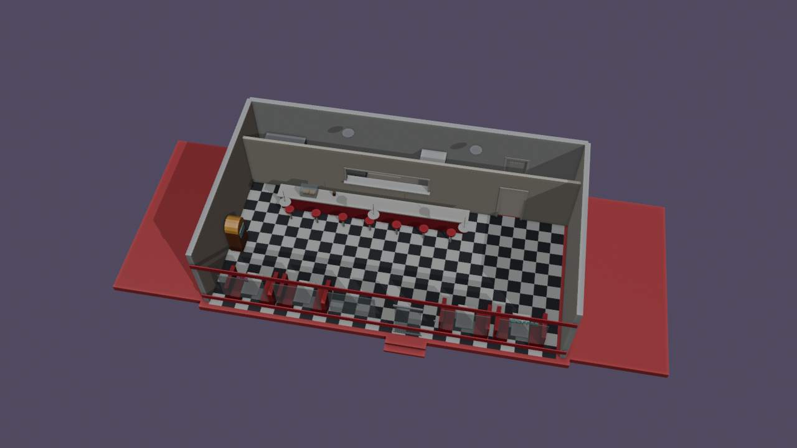 |
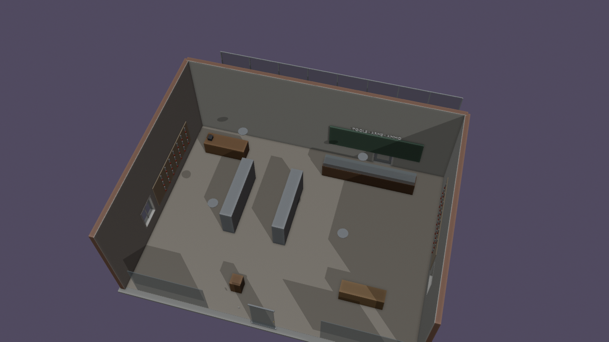 | 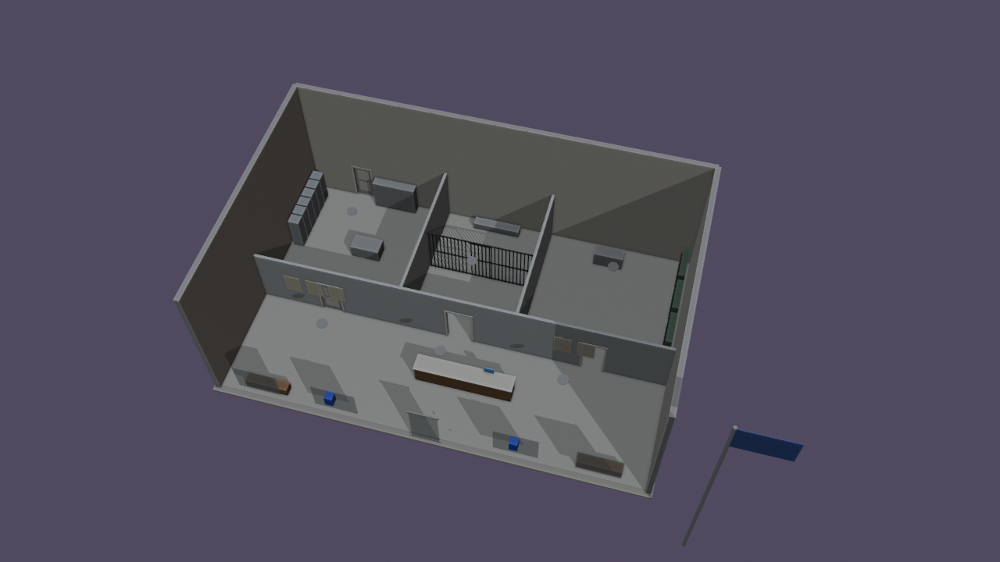 | 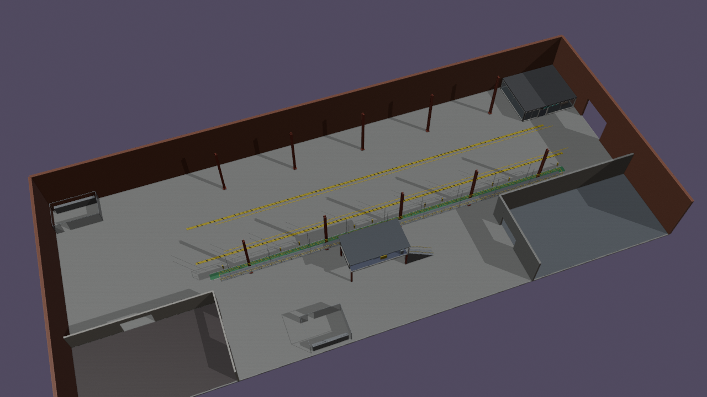 |
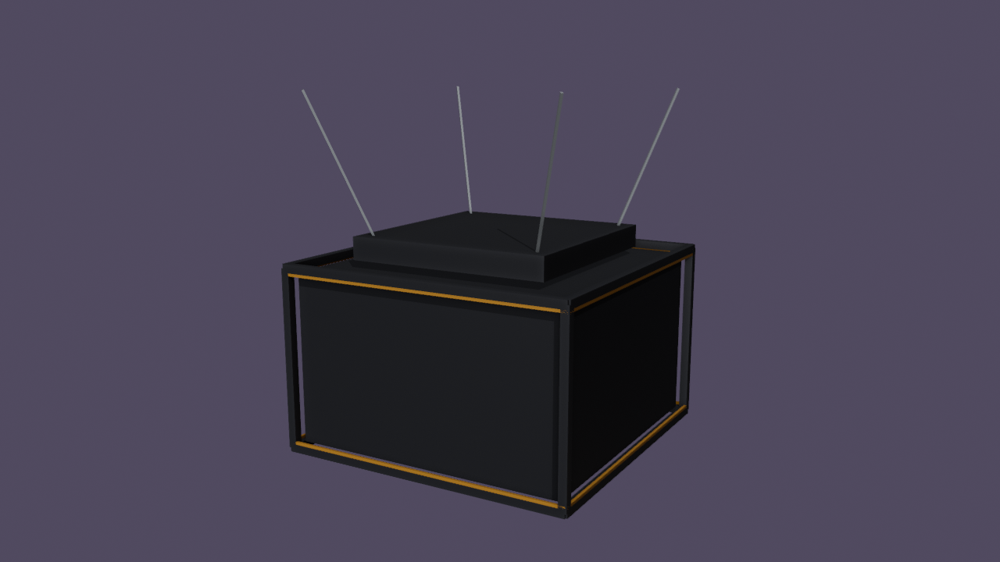 | 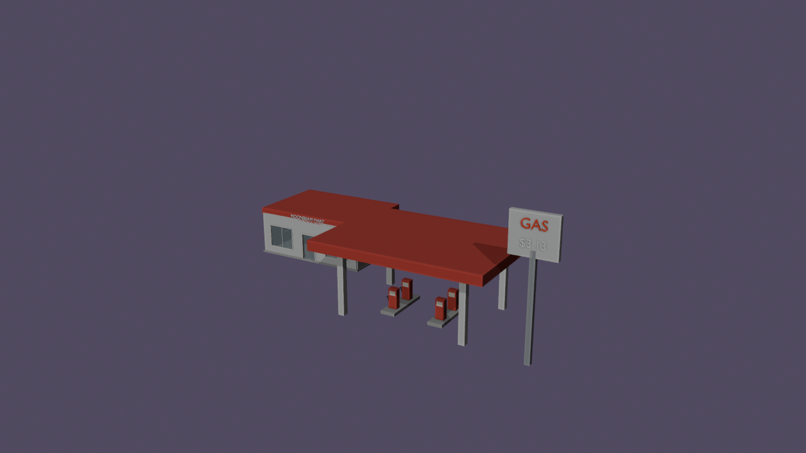 | 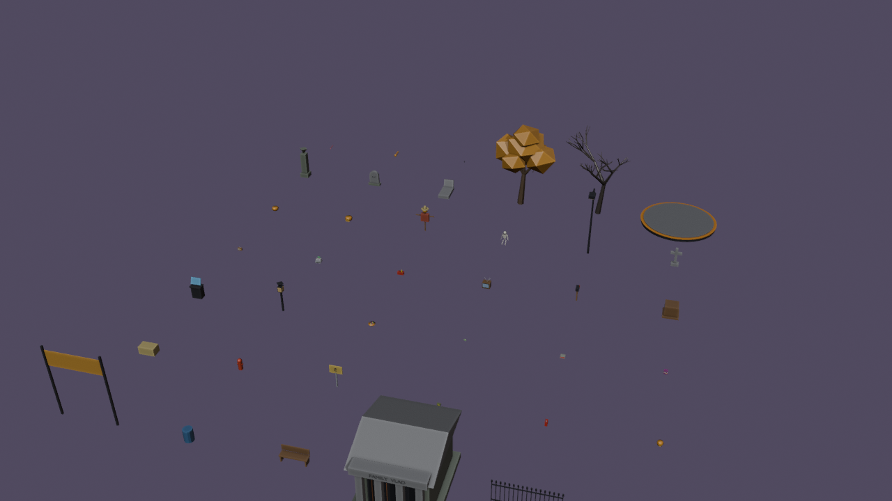 |
| GLB | Objects | Meshes | Triangles | Hinged / jointed nodes | Size |
|---|---|---|---|---|---|
car_muscle.glb | 62 | 44 | 2,080 | Axle_FL, Axle_FR, Axle_RL, Axle_RR, Door_L, Door_R, Hood, Knuckle_FL, Knuckle_FR … (+4) | 160 KB |
car_pickup.glb | 59 | 41 | 1,864 | Axle_FL, Axle_FR, Axle_RL, Axle_RR, Door_L, Door_R, Hood, Knuckle_FL, Knuckle_FR … (+4) | 147 KB |
car_coupe.glb | 53 | 35 | 1,552 | Axle_FL, Axle_FR, Axle_RL, Axle_RR, Door_L, Door_R, Hood, Knuckle_FL, Knuckle_FR … (+4) | 126 KB |
car_hearse.glb | 63 | 45 | 2,032 | Axle_FL, Axle_FR, Axle_RL, Axle_RR, Door_L, Door_R, Hood, Knuckle_FL, Knuckle_FR … (+4) | 162 KB |
car_sedan.glb | 58 | 40 | 1,684 | Axle_FL, Axle_FR, Axle_RL, Axle_RR, Door_L, Door_R, DoorRear_L, DoorRear_R, Hood … (+6) | 137 KB |
parts.glb | 109 | 87 | 2,612 | Blower_Pulley | 218 KB |
wheels.glb | 36 | 27 | 5,460 | — | 243 KB |
robot_arm.glb | 19 | 12 | 536 | Base, Elbow, Shoulder, Wrist | 42 KB |
press.glb | 9 | 8 | 300 | Ram | 28 KB |
crane.glb | 9 | 6 | 128 | Bridge, Hoist, Trolley | 14 KB |
garage_door.glb | 20 | 19 | 288 | Slat_0, Slat_1, Slat_2, Slat_3, Slat_4, Slat_5, Slat_6, Slat_7 | 32 KB |
sliding_door.glb | 8 | 7 | 180 | Panel_L, Panel_R | 18 KB |
barrier.glb | 4 | 3 | 84 | Arm | 9 KB |
cemetery_gate.glb | 26 | 23 | 4,476 | Gate_L, Gate_R | 278 KB |
forklift.glb | 17 | 13 | 472 | Forks, ForkWheel_FL, ForkWheel_FR, ForkWheel_RL, ForkWheel_RR | 40 KB |
lift.glb | 4 | 3 | 108 | Platform | 10 KB |
scanner.glb | 4 | 3 | 72 | Laser_Bar | 8 KB |
plant.glb | 255 | 242 | 21,804 | GiantSpider, SwitchLever_NightShift | 1509 KB |
diner.glb | 176 | 159 | 6,632 | Door_Back, Door_Front, SwitchLever_Main | 493 KB |
gas_station.glb | 122 | 99 | 5,396 | Door_Front, Hose_0_0, Hose_0_1, Hose_1_0, Hose_1_1, Nozzle_0_0, Nozzle_0_1, Nozzle_1_0, Nozzle_1_1 … (+1) | 394 KB |
hardware.glb | 125 | 100 | 5,536 | Door_Back, Door_Front, SwitchLever_Main | 396 KB |
police_station.glb | 168 | 144 | 4,688 | Cell_Door, Door_Back, Door_Evidence, Door_Front, SwitchLever_Main | 391 KB |
jumbotron.glb | 12 | 7 | 368 | — | 31 KB |
house_a.glb | 184 | 163 | 4,776 | BreakerLever, Door_Back, Door_Front, SwitchLever_Main | 425 KB |
house_b.glb | 149 | 128 | 3,240 | BreakerLever, Door_Back, Door_Front, SwitchLever_Main | 298 KB |
props.glb | 185 | 138 | 8,528 | CryptDoor, Turntable_Top | 588 KB |
character.glb | 94 | 66 | 2,674 | Foot_L, Foot_R, Hand_L, Hand_R, Head, Hips, Jaw, LowerArm_L, LowerArm_R … (+7) | 182 KB |
skeleton.glb | 91 | 66 | 2,780 | Foot_L, Foot_R, Hand_L, Hand_R, Head, Hips, Jaw, LowerArm_L, LowerArm_R … (+7) | 199 KB |
3. Physics engine
- cannon-es
RaycastVehicle. Rear-wheel drive with soft suspension (stiffness 32, rest length 0.34 m adjusted by ride height), so you get visible body roll and compression over the 16 cm curbs. - Steering. Speed-sensitive (0.62 → 0.17 rad) with smoothing, so steering and throttle work together at any speed.
- Handbrake drift.
Spacedrops rear grip and brakes the rear axle, which leaves skid marks and tire smoke. - Extras. Downforce applied at the centre of mass, adaptive angular damping, and self-righting (
Backspaceresets the car). - Tuning. Engine stage, transmission ratio and tire compound (grip or drift) set the drive force, top speed and front/rear friction.
- Other bodies. Parked cars are dynamic and pushable. Civilian traffic uses kinematic bodies on lane loops. Police cruisers are full AI raycast vehicles. Breakable props (mailboxes, hydrants, barrels, hay bales) are sensors until a car smashes them.
- Safety clamps (Phase 2). A
postStephook on every internal sub-step caps each vehicle body at 45 m/s and 12 rad/s and resets non-finite velocities. A watchdog puts any vehicle that leaves|x| > 600 || |z| > 600 || y < -20 || y > 150back onto the nearest lane of the road graph. Physics stats are exposed to QA. - Ground clamping (Phase 2). Walkers (pedestrians, homeowners, officers, fleeing drivers) ray-cast down every frame onto whatever is under their feet: sidewalk slabs, porches, house floors or stairs, with the terrain as fallback. Traffic cars sample the terrain at four footprint points and align their pitch and roll to the surface normal, so they climb the hill road flush with the asphalt. The player gets a step-up assist (a low ray hits, a knee-height ray is clear) for porch steps, stair risers and curbs.
- Fuel and damage (Phase 2). Fuel drains with throttle, rpm and engine stage, and an empty tank stalls the engine. Popped tyres shrink the wheel radius and cut friction to 45 % and top speed to 72 % per flat. Engine damage from bullets, explosions and hard crashes over 12 m/s brings smoke and finally a stall with fire.
- Two bugs found by QA and fixed (details in §7):
- cannon-es drives this axis convention backwards, so the engine sign is flipped.
- The downforce was first applied at a world-space point, which produced a huge roll torque and killed turning at speed.
4. Audio and dialogue pipeline (ElevenLabs)
All 54 spoken lines are ElevenLabs takes, one per line, generated with the eleven_v4 model through the ElevenLabs connector.
- Delivery tags. Some lines use inline tags such as
[whispering],[panicked],[menacing]and[laughs]. - Cost. A single-line estimate came first (145 credits, about $0.03). The full run cost 4,447 credits for 4,267 characters.
- Import.
scripts/import-elevenlabs.mjsdownloads each take topublic/audio/dialogue/<line>.mp3and records the voice ID, generation ID and credits inmanifest.json. Re-imports skip generations they already have. - No overwrites.
npm run dialoguenever replaces an ElevenLabs take unless you pass--force.
| Character | ElevenLabs voice | Voice ID | In-game FX chain |
|---|---|---|---|
| Big Sal (foreman) | Grits Oxley – Gritty Grandpa | 8vYCG1Q6bAbJWXdRuCIr | room |
| Bones McGee (skeleton welder) | Dr. Quibble – Nerdy Cartoon | RDSy0QN68yhrjuOgqzQ4 | rattle (tremolo) |
| Old Mortimer (groundskeeper) | Romulus II – Deep, Mysterious | 7lJ2JuXZKHyck5zlS7XQ | ghost (long reverb + delay) |
| The Phantom | Final Boss – Evil Villain | d3qrd1ge6zWDvUxIeXiH | ghost |
| Dolores (diner) | Latrice – Down-to-Earth Southern | tmHt9OXLAa0z2IPF4k0Y | room |
| Panicked car owner | Ayla – Bubbly & Expressive | b8JMPeNuVrqqWExQc8e9 | dry |
| Townsperson | Olivia – Storytelling | MJw0jtAmgm4D71m0HUJU | dry |
| Police dispatch | Claire – Crisp & Clear | umwdC76NumBsGtudno3p | radio (band-pass, saturation, static) |
| Officer on foot | Johnny – Strong American | R3brgFoQWI6vjwB1A4aP | dry |
| Wolfman Jack-O (radio DJ) | Johnny Dynamite – Vintage Radio DJ | CeNX9CMwmxDxUF5Q2Inm | radio |
| Kiosk assistant | MegaBot | DXav2Iq8VRhoGarNlWcx | robot (ring modulation) |
| Plant PA | Clara – PA Clear Voice | no52gq1ZwK7Lmejv1EHz | radio |
| Line workers | K. V. Hagen · Shay | t1yzxMpe9zK42bXmI1T2 · ZQF62XTHtHemfMB0pp0G | room |
Phase 2: demographic-accurate voices. The first build used one female townsperson voice for every pedestrian (including kids saying "my kid…") and a female panic voice for every car owner. Phase 2 tags every voice with a demographic (adult_male, adult_female, child_boy, child_girl, skeleton, plus machine/spirit for the kiosk and the Phantom). Each NPC carries a profile { ageGroup, role, voiceKey, voiceId } and only draws lines from its own pool. 28 new lines were generated through the ElevenLabs connector (eleven_v4, 1,587 characters, 1,796 credits; total now 82 lines, 6,243 credits):
| New voice | ElevenLabs voice | Voice ID | Lines |
|---|---|---|---|
| Townsman (adult male) | Roger – Laid-Back, Casual | CwhRBWXzGAHq8TQ4Fs17 | 4 chatter lines (double shift at the plant, the mortgage…) |
| Panicked car owner (male) / male homeowner | Chris – Charming, Down-to-Earth | iP95p4xoKVk53GoZ742B | "Hey! That's my ride! Somebody call the sheriff!" + 2 more, homeowner greet & panic |
| Female homeowner | Olivia – Storytelling | MJw0jtAmgm4D71m0HUJU | homeowner greeting (female panic stays on Ayla) |
| Trick-or-treater (boy) | Teddy Twinkle – Cute Cartoon Boy | XjGYkUkzth8BPs29fmcV | "Trick or treat! Look at my candy bag…", "Whoa, cool hot-rod, mister!", superhero, scared |
| Trick-or-treater (girl) | Candy – Girly and Sweet | Nggzl2QAXh3OijoXD116 | "Trick or treat, smell my feet…", witch, ghost costume, scared |
| Officer on foot | Johnny (existing) | R3brgFoQWI6vjwB1A4aP | "Stop right there! Police!", "Freeze!", "Drop the weapon! Shots fired!" |
| Dispatch | Claire (existing) | umwdC76NumBsGtudno3p | shots fired, burglary in progress |
| Vinnie the Fence | Boom Mike – Jersey Guy | 2UyW0L6yjNuo3ZH3XnoV | 2 lines |
| Hank (hardware clerk) | K. V. Hagen | t1yzxMpe9zK42bXmI1T2 | shop greeting |
| Pump speaker | Latrice | tmHt9OXLAa0z2IPF4k0Y | "Pump's on, hon. Two bucks a gallon…" |
Fallbacks. For new or changed lines without a take, npm run dialogue either calls the ElevenLabs REST API (when ELEVENLABS_API_KEY is set) or synthesises locally with Windows SAPI. At runtime, a missing file falls back to the browser's speechSynthesis. Every line also shows a subtitle and a speech bubble.
The rest of the sound is synthesised in WebAudio:
- the V6/V8 engine note, with blower whine and turbo whistle
- tire screech, horn, car alarm and a positional siren for each cruiser
- stamping thumps, weld crackle, paint hiss, garage-door rattle and gate creak
- ambience: wind, owls and crows
- WHOO 66.6 FM (synthwave) and KRYP 13.13 (graveyard rock), both generated by a step sequencer, with DJ breaks between songs
5. Town, factory and cemetery layout
- Motorworks Plant (120 × 50 m, brick and steel). It has a sawtooth roof, chimneys, a neon MOTORWORKS sign with a giant spider web and a bobbing spider, a parking lot, sliding glass lobby doors, and a lobby with the configurator kiosk and turntable. A roll-up exit door at the east end leads onto the exit road. The Custom Bay / Paint Shop has its own roll-up door.
- Main Street: the 1950s Moonlite Diner, gas station, hardware store, police station, Halloween banners, benches, hydrants, flickering streetlights and leaf piles.
- Elm Avenue: a suburb of 10 houses plus 12 along Main Street. Each yard is decorated: glowing jack-o'-lanterns on porches, tombstones, ghosts, skeletons, scarecrows and hay bales, with cobwebs on the porches.
- Trees: about 250 autumn trees in four foliage tints.
- The hill road winds up a 10 m grade into thick fog.
- Old Town Cemetery (124 × 118 m):
- wrought-iron gates that creak open as you approach, and an iron perimeter fence
- 6 crypts plus the grand *Family Vlad* crypt with a hinged door
- about 150 crooked tombstones, each with a collider
- dead trees, green lanterns, floating ghosts
- the gravel Graveyard Shift drift loop
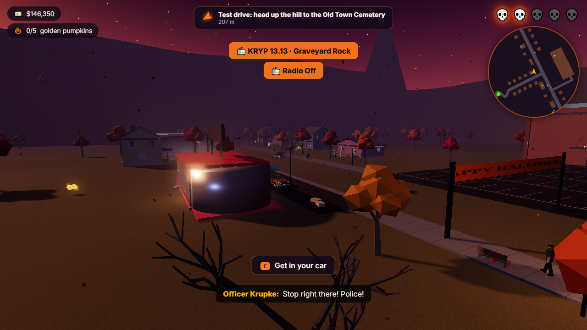 | 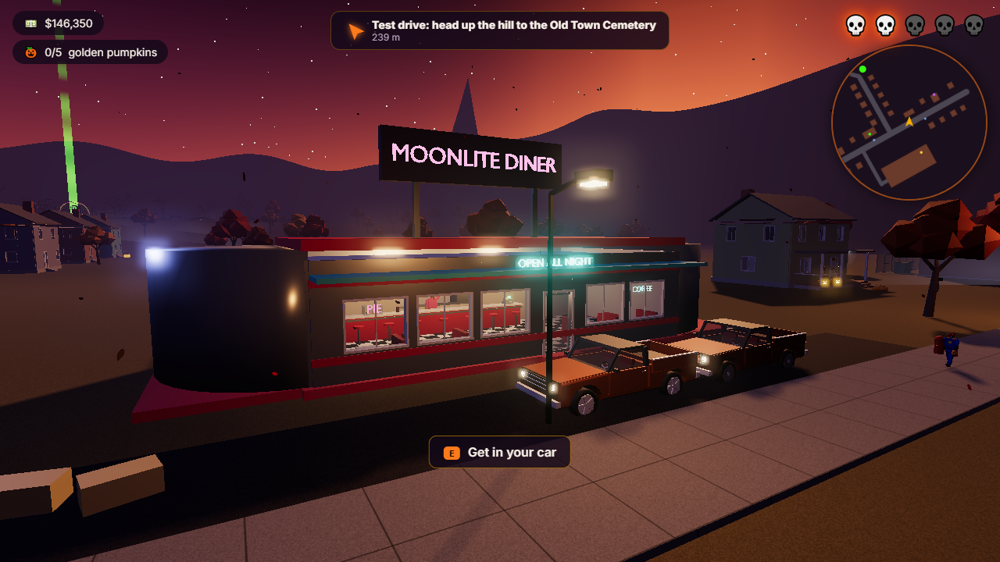 |
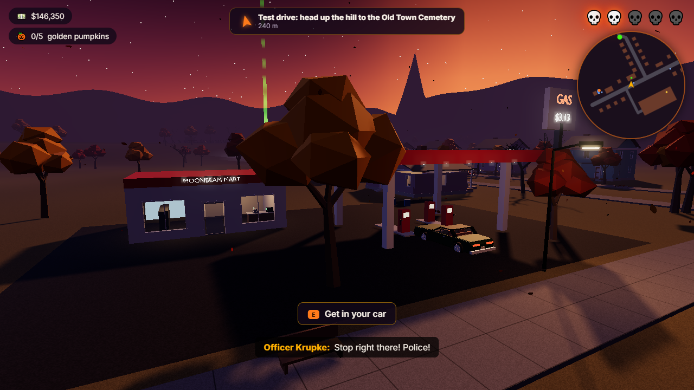 | 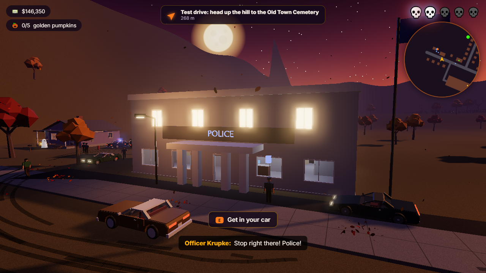 |
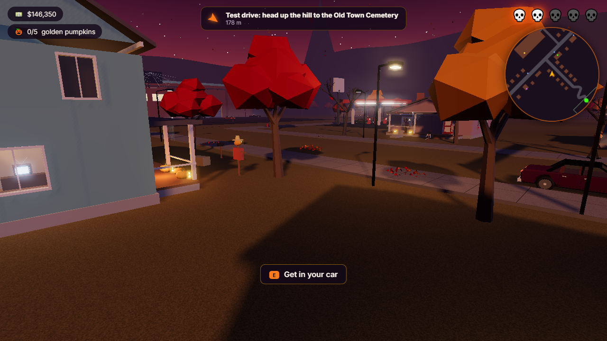 | 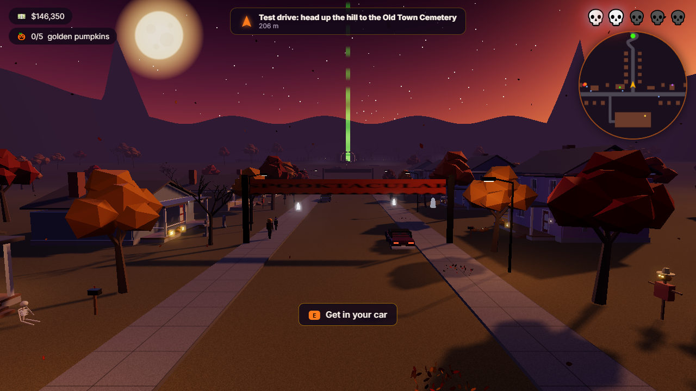 |
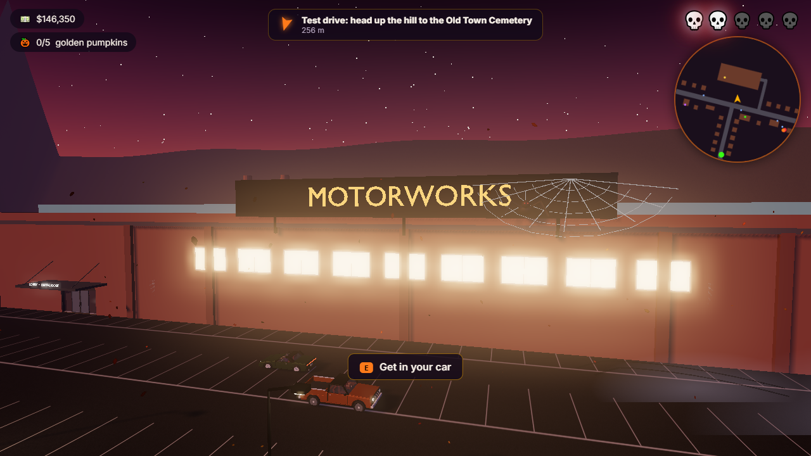 | 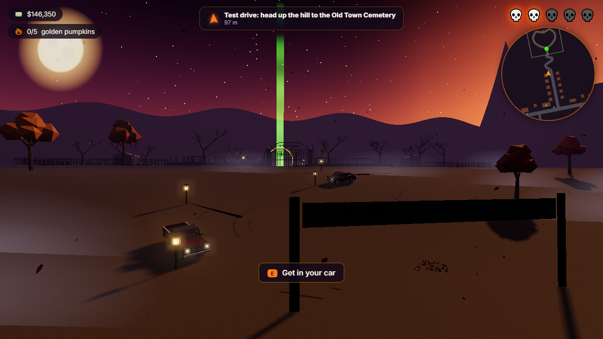 |
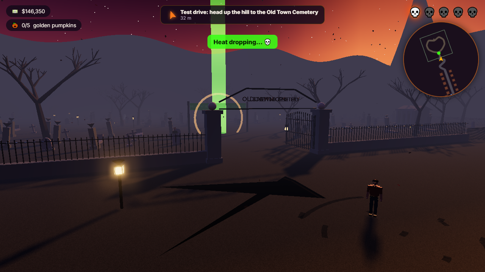 | 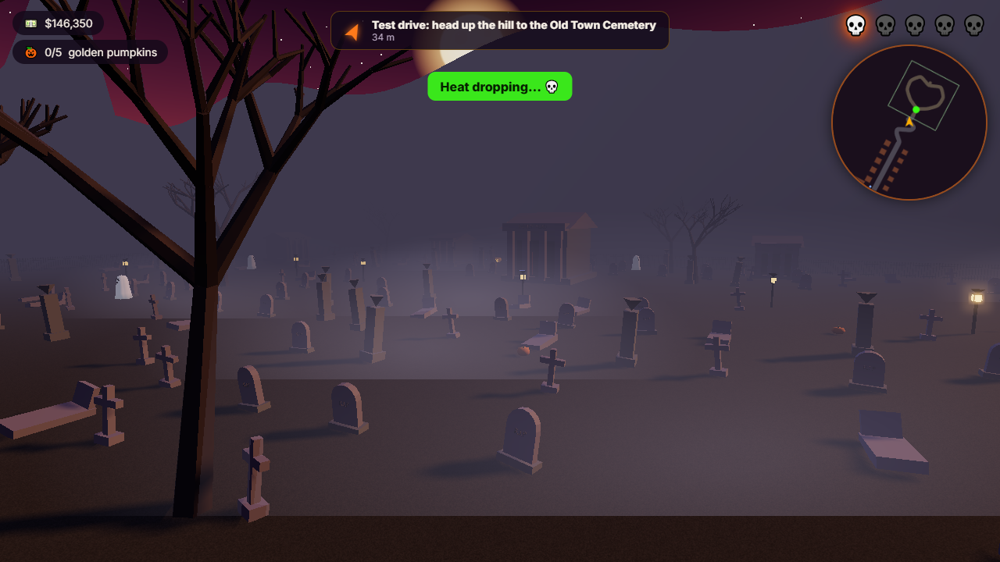 |
6. Gameplay systems
A. Configuration kiosk
The kiosk has nine tabs:
- Body: Muscle, V8 Pickup, Street Coupe or Hot-Rod Hearse.
- Paint: primary and secondary colour (swatches or a picker) and finish. The finishes are Gloss, Matte, Metallic, Midnight Pearlescent (iridescence and sheen) and Haunted Rust Patina (procedural FBM rust in the shader).
- Livery: stripes, flames, ribcage, jack-o'-lantern rally, plus the locked Monster Mash lightning.
- Wheels: 6 rims including the locked pumpkin rim, tire lettering (white letters, redline, whitewall) and caliper colour.
- Stance: ride height (slammed to lifted) and camber.
- Body Kit: splitter, bullbar or push bumper; cowl, twin-scoop or animated blower hood; rack, light bar, siren or taxi roof; lip, GT or ducktail spoiler; side, quad or flame exhaust.
- Lighting: underglow in four colours.
- Performance: engine stage, gearing and tire compound, with projected stat bars.
- Monster Mash: the unlockable pack (see the easter eggs).
Every change updates the car on the turntable live. Changing the hood or engine pops the hood open so you can see the engine, and changing the body opens the doors. Liveries are drawn on canvases and projected in the car's rest space, so they move with the doors and hood.
B. Assembly line
Each order gets an order number such as MW-1031-xxxx and a live progress panel. V cycles the station cameras, F follows the car, and holding T runs the line at 5× speed. There is an E info panel at every station.
- Stamping: flat blanks are fed from the pallet into the press, stamped into glowing curved panels with sparks and screen shake, and pushed onto the output rack.
- Body Shop: IK robots carry each door, the hood and the trunk lid from the feeder racks to their hinge mounts, then spot-weld them and swing them shut one by one (see §6 H).
- Paint: spray robots fill the booth with paint mist while the shader blends from raw steel to your finish and livery.
- Powertrain: the hood opens, the crane fetches the engine from the staging bay on chains and lowers it into the bay, the lift rises, and the loader arms push the wheels onto their hubs.
- Final QC: the laser scanner sweeps, the lights and underglow flicker, every hinge cycles, the roll-up door opens, and the car rolls out onto the apron.
Workers in Halloween costumes animate at each station, including Bones the skeleton welder. A forklift (with a driver) does laps of the aisle.
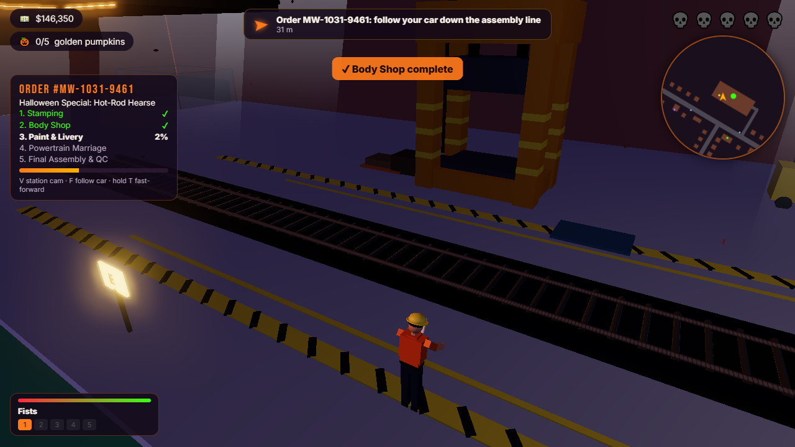 | 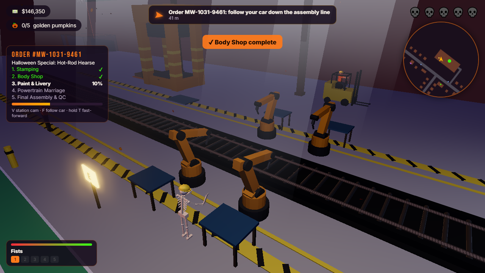 |
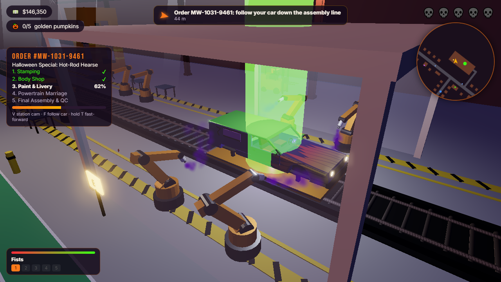 | |
C. Driving
- Cameras: a third-person chase camera with mouse orbit, and a first-person cockpit (
C) where the hands follow the animated steering wheel. - Waypoint guide: a green beacon, a HUD arrow and a minimap target guide you from the factory to the cemetery.
Ntoggles it. - Graveyard Shift: a timed, checkpointed drift trial that starts at the cemetery arch and scores drift points.
D. Car theft and police
- Stealing a car. Press
Eat any parked or stopped car. The player walks to the door, the hinged door swings open, and you either hotwire it (some cars have an alarm with flashing hazards) or pull the driver out. The driver runs off screaming. Stolen cars are swapped for a fully articulated, repaintable model. - Wanted level (1–5 skulls). Crimes that raise it:
- a theft that civilians or police witness (line of sight)
- speeding past a patrol car
- three smashed props within 30 s
- ramming a cruiser
- Pursuit. Police cruisers (lightbar, siren and push bumper) pursue you with intercept prediction, whisker raycasts, ramming and unsticking. One extra unit spawns per skull, out of your view.
- Escaping. You can:
- break line of sight
- hide in the cemetery fog (detection range drops from 62 m to 26 m and the heat decays faster)
- get a respray in the Custom Bay, which clears both your stolen status and your heat
- Busted. If you are boxed in or stopped next to a cruiser for 5 s, you are BUSTED: you pay a fine and respawn outside the police station.
E. Halloween easter eggs
- The Phantom Hearse. Drive to the Vlad crypt and honk 3 times (
H). The crypt door opens and a translucent, green-burning hearse races you down the hill to the gas station. - Bones the Skeleton Welder at Station 2 tells five bone puns. His jaw moves while he talks.
- Golden Pumpkins. Five glowing pumpkins are hidden around the map: behind the diner, in an Elm Avenue backyard, behind the Vlad crypt, on the plant's loading dock, and in a south-west field. Collecting all five unlocks the Monster Mash pack: glowing jack-o'-lantern rims, a green-glowing Frankenstein blower, green lightning exhaust and a lightning livery.
- Haunted car radio. Press
Rin any car to cycle WHOO 66.6 FM and KRYP 13.13, with DJ breaks.
- Jack-o'-Lantern Launcher. Finding all five Golden Pumpkins, or beating the Phantom Hearse, unlocks weapon slot 5: a pumpkin-faced launcher that lobs exploding jack-o'-lanterns.
F. NPC demographics (Phase 2)
- Profiles.
src/data/demographics.jsgives every spawned person a profile{ ageGroup, role, voiceKey, voiceId }and dresses the mesh to match: - Women: long hair or a ponytail, and sometimes a skirt.
- Men: short hair, sometimes a beard or moustache.
- Kids: 0.68× scale, one of four costumes (witch hat, ghost sheet, pumpkin mask, or superhero cape with mask), and a candy pail.
- Lines. Each NPC speaks only from the pool for its age group.
ADULT_ONLY(my kid, mortgage, shift at the plant…) never reaches a child. Traffic drivers are always adults, so a kid never spawns behind a wheel. - Staff fixes. The factory crew's line pools were re-cast to match their voices (for example, the QC inspector and the bay painter are women). Porch neighbours alternate men and women with gender-matched lines.
- Audit.
npcs.audit()proves it at runtime, and thenpc_demographicsQA check runs it. Every utterance is logged with the speaker's age group and the voice's demographic.
G. Enterable buildings
- Doors. Every house (22), the diner, the gas mart, the hardware store and the police station has hinged doors.
Eopens and closes them. A locked house front door can be kicked in (loud, and it trips the alarm if the house has power). NPCs and officers push unlocked doors open as they walk through. - Colliders. Each wall piece is a separate collider, so the doorways are real gaps.
- Window glass. About 300 window panes become one instanced, shootable glass mesh. Its emissive glow follows each building's lights and power.
- Camera. The chase camera tightens up indoors, and ceiling colliders keep it inside the room.
- Stairs. The foreman's office stairs (21 risers of 0.2 m) and all the porch steps are climbable thanks to the step-up assist.
H. Plant overhaul, conveyor and Jumbotron
- Conveyor. A floor track with steel rails, scrolling chain strips and 160 instanced chain rollers that spin with the carrier. The car rides an articulated yellow skillet with four lift posts and guide wheels.
- Station 1: stamping. A blank is lifted off the pallet, slid onto the press bed, stamped from a flat to a curved panel (with sparks and a thump), then pushed onto the output rack.
- Station 2: body shop. Four IK-driven robots (an analytic 2-link solver plus base yaw) grip each real door, rear door, hood and trunk mesh off their feeder racks and carry it in an arc to its exact hinge mount. Each robot swaps to the welder to spot-weld while the hinge swings shut. The fourth robot seam-welds the roof line. QA checks that the gripper stays within 0.75 m of the part for the whole carry.
- Station 4: powertrain. The engine waits on a red staging stand. The crane bridge dips the hook to pick it up and travels on chains to the car, while the under-lift raises and blue loader arms push each wheel from the tyre racks onto its hub.
- Jumbotron. A four-sided LED box hangs from the trusses, visible from the lobby and the floor. A sweeping camera renders the active station into a 512×288
WebGLRenderTargetat about 16 Hz, only while you are near the plant. A shader composites the picture-in-picture feed with a 1024×576 canvas overlay: order number, customer spec, current station, the five-step checklist (Stamping → Chassis Weld → Paint Coat → Engine Marriage → Dyno & Laser QC) and a progress bar, finished with an LED pixel grid. - Office and showroom. The foreman's office has a Night Shift switch that swaps the floodlights for purple blacklight and pulsing red emergency beacons. The delivery showroom shows your latest build on a turning podium.
I. Seated drivers everywhere
- Cabin glass. Opacity 0.38, roughness 0.1, metalness 0.2, so you can see the dashboard, seats, steering wheel and occupants.
- Who sits. Every traffic car, police cruiser, the player's own car (in chase view) and the forklift has a person on the driver's seat. They use the
drivepose: hips on the cushion, thighs about 85° forward, shins to the pedals, hands on the wheel. - Steering. The arms and the articulated
SteeringWheelturn together. Lite civilian cars keep the wheel as its own baked node for this. - Stealing an occupied car. The driver is lifted off the seat through the open
Door_L, turns and stands up, then flees in thepanicrun, shouting in their own gender's voice.
J. Road graph, ground clamping and physics safety
- Road graph.
roadGraph.jsbuilds right-hand lanes 2.6 m from the centre of Main Street, Elm Avenue, the Factory Loop (through the plant lot and the exit road) and the Hill Road. - Junctions and dead ends. Junctions get Bézier connectors, with control points where the two lane lines meet, so through-traffic keeps its lane. Dead ends get U-turn loops.
- Traffic behaviour. Cars pick random turns, slow for bends and connectors, and stop at junction lines. They hold a junction reservation, and brake for cars, peds, the player and police along their path.
- Whiskers. Three whisker rays (centre and ±18°, up to 12 m) catch any building or wall collider. They ignore curbs, floor slabs and the terrain.
K. Police foot chase and tactics
- On foot. Cruisers carry a seated officer. If the player is on foot within 14 m, is inside a building, is off the road network, or the cruiser stays blocked, the officer opens the hinged door and steps out.
- Beat cops. Three of them walk Main Street and the station forecourt, and join in when a crime happens nearby.
- Wanted 1–2: officers sprint along A\* paths on the nav graph (outdoor grid plus building doorway and room anchors, with doors opened on the way). They shout "Stop right there! Police!", and holding the player within 1.4 m for 1.8 s is a tackle and cuff (BUSTED).
- Wanted 3–5: they draw sidearms, take a firing stance and shoot. Hit chance falls with distance and your speed. Hits hurt the player on foot, or pop tyres and damage the engine of your car.
- Downed officers get back up after 12 s.
L. Weapons and shooting
- Slots:
1fists,2crowbar,39mm pistol,4pump shotgun,5Jack-o'-Lantern Launcher. - Getting them: buy at Hank's Hardware (crowbar $60, pistol $450, shotgun $950, ammo $40), steal from the police evidence room and armory, or unlock the launcher through the easter eggs.
- Aiming.
RMB(orQ) switches to an over-the-shoulder camera with a crosshair, and the arm rises toward the aim point.LMBfires, andRreloads on foot. - Ballistics. Shots trace from the crosshair to the muzzle, with spread and pellets. The closest hit wins among static geometry, vehicle bodies, character capsules, window panes, street and porch lights, and breaker boxes. Every shot has a muzzle flash light, smoke, an ejected brass casing, tracers, impact sparks or dust, and a synthesised gunshot.
- Damage:
- Tyres: a flat drops grip and top speed, and the rim sparks.
- Engine: white smoke below 60 %, black smoke below 30 %, and a stall with fire at 0.
- Traffic cars: they stop and the driver bails out.
- Glass and lights: windows shatter, streetlights and porch jack-o'-lanterns go dark, and their light sources turn off.
- Breakers: cut the house's power.
- Heat. Gunfire with witnesses adds 1–2 skulls and scatters bystanders. Hitting a person adds 2, and hitting police adds 2.
M. Light switches and power
- Switches. Every enterable building has a wall switch by its door. The lever flips, it clicks, and the building's fixtures, light sources and window glow switch together.
- Breaker boxes. Each house has one on its side wall. Flip it or shoot it to kill the lights, disable the burglar alarm and cut the phone line.
- Plant. The Night Shift switch is in the foreman's office.
- Cars.
Ltoggles the headlights, tail-lights and underglow.
N. Doorbells and burglary
- Doorbells.
Eon the porch button plays a two-tone chime. After 2 s the front door swings open and a homeowner (a random adult man or woman, with the matching voice) steps to the threshold: - Friendly (not aiming a weapon, low heat, or wearing the $15 pumpkin mask): you get candy and $15–$50.
- Hostile (aiming, or kicking the door in): the homeowner screams in their own voice and runs for the kitchen phone. If the power is still on, the police are called (+2 skulls). If you cut the breaker first, the line is dead.
- Loot:
| Item | Value | How you carry it | |---|---|---| | Vintage CRT TV | $180 | both hands | | Cash Register | $250 | both hands | | Jewelry Box | $150 | loot bag | | Power Tool Kit | $120 | both hands | | Evidence Bag | $400 | loot bag | | Giant Candy Bowl | $40 | loot bag | | Retro Radio | $90 | loot bag | | Cash Stash | $60–200 | loot bag |
Heavy items slow you down and block sprinting, jumping and driving until you stash them.
- Trunk stashing. Walk to the rear of your car and press
Eto pop the hinged trunk, thenEagain to stash. Items sit in the trunk bed and show while the lid is open (pickup beds always show them). - Fencing. Vinnie the Fence works the alley behind Hank's Hardware. He buys from your hands, or from the trunk if you drive up. Busted? Your bag is confiscated.
O. Fuel and the gas station
- Tank. Every drivable car has a 16-gallon tank (0–100 %).
- Burn rate. Fuel burns with throttle and rpm. The V6 uses the least, the supercharged V8 burns 1.45× and the twin-turbo 1.75×. Stolen cars start at 25–85 %.
- Empty tank. At 0 % the engine sputters, backfires and stalls. Under 4 % it splutters.
- HUD. The speedo shows a fuel bar with a blinking low-fuel light under 15 %, plus damage readouts (flat tyres, engine %).
- Pumps. Pull up to a Moonbeam Mart pump (or stand at it next to your car) and press
E. The hose swings out, a "Pump 3 · Regular" counter ticks gallons and dollars at $2/gal, and the pump glugs until the tank is full, the cash runs out, or you drive off. - Jerrycans. They cost $25 at the mart or hardware store. Pouring one into any car adds +35 %, even a stalled car out in the cemetery.
7. Automated QA self-test loop
npm test (tests/qa.mjs) drives the real game in Playwright Chromium on the local GPU. It presses real keys, measures the results through window.__MW, captures every screenshot in this document, and writes tests/qa-results.json plus the qa section of TELEMETRY.json.
Last run: 2026-10-23T13:54:40.281Z — 30/30 checks passed in 354s (Playwright, Chromium + ANGLE/D3D11 on the local GPU).
- ✔ boot — Page loads, Blender assets stream in, zero console errors / uncaught exceptions
- ✔ assets — All Blender .glb assets load with valid bounding boxes and hinged/jointed child nodes
- ✔ walk — Player walks with WASD and collides with walls and cars (no clipping)
- ✔ escape — Escape/pointer-lock release clears held movement keys (no auto-walking after menu)
- ✔ dialogue — Talking to an NPC (E) plays spoken dialogue audio with subtitles/speech bubble
- ✔ kiosk — Kiosk opens; every customization category changes the live 3D car; order is placed
- ✔ factory_jumbotron_and_conveyor — Live Jumbotron render-target feed updates; conveyor skillet/rollers move; robots physically carry doors/hood/trunk from racks to the chassis
- ✔ assembly — Car progresses through all 5 assembly stations with hinge + robot animation sync, then rolls out
- ✔ hinges — Finished car: doors, hood, trunk rotate about their Blender pivots (no floating parts)
- ✔ physics — Vehicle physics: W accelerates; W+A turns left and W+D turns right simultaneously (heading change)
- ✔ cockpit — First-person cockpit camera shows hands on the animated steering wheel; R toggles the haunted radio
- ✔ town — Town, autumn/Halloween decorations, Main Street businesses render (screenshots)
- ✔ cemetery — Cemetery gate hinges open as the player approaches; crypts, tombstones, fog
- ✔ theft — Car theft (E on a town car) opens the hinged door, triggers wanted level and police pursuit
- ✔ busted — Boxed in by police for 5 s => BUSTED, fine, respawn at the Police Station
- ✔ npc_demographics — NPC demographics: kids are 0.68x trick-or-treaters with kid-only voices; male/female NPCs only use matching voices; no child drivers
- ✔ enterable_buildings — Walk through hinged front doors into the Diner, Hardware Store, Police Station and a House (no collider blocking)
- ✔ seated_drivers — Traffic cars, police cruisers, the forklift (and the player) have seated drivers; arms + steering wheel follow the steering; cabin glass is see-through
- ✔ navigation_and_bounds — 30 s of traffic + police pursuit: no vehicle leaves |x|,|z| < 600 or floats (|y - ground| < 0.6); traffic stays on the road graph
- ✔ police_foot_chase — Wanted on foot: an officer dismounts the cruiser (hinged door) and chases the player on foot; armed response at 3+ stars
- ✔ weapons_and_shooting — Buy/equip a pistol, aim (RMB/Q) and fire at a car tyre and a streetlight: ammo decrements, tyre pops, light goes out, impact FX
- ✔ light_switches — Interior wall switch (E) toggles the building lights (fixtures + light sources + window glow); breaker box cuts power; Night Shift switch re-lights the plant
- ✔ doorbell_and_burglary — Ring a doorbell (E): chime, hinged front door opens, a demographic homeowner greets + tips; steal the TV and stash it visibly in an open car trunk; fence it
- ✔ fuel_and_gas_station — Driving burns fuel (stalls when empty); refuelling at the Gas Station pumps restores 100% at $2/gal; jerrycan adds +35%
- ✔ pumpkins — Golden Pumpkins: collecting all 5 unlocks the Monster Mash kiosk pack
- ✔ phantom — Phantom Hearse: honking 3x at the Vlad crypt summons a ghost hearse race
- ✔ trial — Graveyard Shift: driving through the start arch starts the timed drift trial
- ✔ radio_audio — Spoken dialogue audio + radio DJ use the cached local audio files (no TTS fallback needed)
- ✔ perf — Performance snapshot (draw calls, triangles, FPS on this GPU)
- ✔ final_errors — Zero console errors or uncaught exceptions during the whole QA run
Key measurements
{
"boot": {
"loadMs": 3384,
"gpu": "ANGLE (AMD, AMD Radeon (TM) R5 M330 (0x00006660) Direct3D11 vs_5_0 ps_5_0, D3D11)",
"consoleErrors": []
},
"factory_jumbotron_and_conveyor": {
"factory": {
"ikSolves": 743,
"pressCycles": 1,
"partsCarried": 3,
"nightShift": false
},
"jumbotron": {
"before": {
"frames": 338,
"overlay": 64,
"faces": 4
},
"after": {
"frames": 501,
"overlay": 147,
"faces": 4
}
}
},
"physics": {
"inCar": true,
"fpsDuringDrive": 22.3,
"speedAfterW": 17,
"leftHeadingDelta": 0.841,
"rightHeadingDelta": -1.296,
"braking": {
"before": 26.67,
"after": 11.67
},
"highSpeed": {
"speed": 24.05,
"dHeading": -0.563
},
"highSpeedTurn": {
"speed": 24.05,
"dHeading": -0.563
},
"skidMarks": 749
},
"theft": {
"inStolenCar": true,
"doorSwungOpen": 1,
"markedStolen": true,
"wantedLevel": 3,
"pursuit": [
{
"mode": "pursuit",
"pos": [
160.5,
33.8
],
"siren": true,
"parked": true
},
{
"mode": "pursuit",
"pos": [
162.5,
31.4
],
"siren": true,
"parked": true
},
{
"mode": "pursuit",
"pos": [
130.6,
6.7
],
"siren": true,
"parked": false
},
{
"mode": "pursuit",
"pos": [
61.8,
4.6
],
"siren": true,
"parked": false
}
],
"police": {
"level": 4,
"cars": [
{
"mode": "pursuit",
"pos": [
160.5,
33.8
],
"siren": true,
"parked": true
},
{
"mode": "pursuit",
"pos": [
162.5,
31.4
],
"siren": true,
"parked": true
},
{
"mode": "pursuit",
"pos": [
130.6,
6.7
],
"siren": true,
"parked": false
},
{
"mode": "pursuit",
"pos": [
61.8,
4.6
],
"siren": true,
"parked": false
}
],
"officers": [
{
"state": "foot",
"pos": [
137.4,
0.2,
10.6
],
"armed": true
},
{
"state": "foot",
"pos": [
137.4,
0.2,
10.6
],
"armed": true
},
{
"state": "foot",
"pos": [
124,
0,
4.3
],
"armed": true
},
{
"state": "beat",
"pos": [
-86.5,
0.2,
-8
],
"armed": false
},
{
"state": "foot",
"pos": [
38.2,
0,
13.3
],
"armed": true
},
{
"state": "seated",
"pos": [
0.4,
0,
0.1
],
"armed": false
},
{
"state": "seated",
"pos": [
0.4,
0,
0.1
],
"armed": false
}
],
"stats": {
"crimes": [
{
"kind": "speeding",
"at": 106631,
"level": 1
},
{
"kind": "rammed",
"at": 111692,
"level": 2
},
{
"kind": "theft",
"at": 141219,
"level": 3
},
{
"kind": "rammed",
"at": 146856,
"level": 4
}
],
"maxLevel": 4,
"busts": 0,
"escapes": 0,
"dismounts": 2,
"footChases": 4,
"shotsAtPlayer": 11,
"resets": 0
}
}
},
"navigation_and_bounds": {
"worst": {
"oob": 0,
"float": 0,
"maxDy": 0
},
"physics": {
"velocityClamps": 0,
"spinClamps": 0,
"outOfBounds": 0,
"traffic": {
"whiskerBrakes": 29,
"junctionWaits": 0,
"resets": 0
},
"nav": {
"nodes": 1378,
"edges": 4532,
"rays": 9319,
"buildMs": 266
},
"policeResets": 0
}
},
"fuel_and_gas_station": {
"burn": {
"before": 60,
"after": 58.98
},
"drivingConsumesFuel": {
"before": 60,
"after": 58.98
},
"stall": {
"speed": -0.01,
"fs": {
"fuel": 0,
"stalled": true,
"session": false,
"stats": {
"refuels": 0,
"gallons": 0,
"spent": 0,
"jerrycans": 0
}
}
},
"stallsWhenEmpty": {
"fuel": 0,
"stalled": true,
"session": false,
"stats": {
"refuels": 0,
"gallons": 0,
"spent": 0,
"jerrycans": 0
}
},
"jerrycan": {
"prompt": "[E] Get in your car — 0% fuel",
"fuel": 35
},
"jerrycanAdds35": {
"fuel": 35,
"stalled": false,
"session": false,
"stats": {
"refuels": 0,
"gallons": 0,
"spent": 0,
"jerrycans": 1
}
},
"refuel": {
"prompt": "[E] Refuel — $2/gal (35% now)",
"fuel": 100,
"cost": 20.82,
"stats": {
"refuels": 1,
"gallons": 10.409791596800002,
"spent": 20.819583193600003,
"jerrycans": 1
}
},
"pumpPrompt": "[E] Refuel — $2/gal (35% now)",
"tankFull": 100,
"chargedTwoDollarsPerGallon": {
"paid": 20.81958319360274,
"gal": 10.409791596800002
}
},
"perf": {
"fps": 19,
"drawCalls": 1673,
"triangles": 609368,
"vehicles": 6
}
}Problems found by the QA loop, and their fixes:
- Engine force sign. It was reversed for cannon-es with this axis convention:
Wdrove the car backwards. - Downforce torque. The downforce was applied at a world-space point, which made a large roll torque and stopped the car turning at speed.
- Car dimensions. They were read from the glTF scene instead of the
Car_*node's extras, so the wheels came out with NaN scale. - Accessory names. GLTFLoader strips the
.from Blender's.001suffixes, so props held in the right hand showed up on every character. - Mirrored text. The cemetery sign and the banners read backwards.
- Kiosk. It was over-exposed by bloom, and its camera could orbit through the lobby walls.
- Slow-motion physics. The dt clamp made physics run slowly at low frame rates. The clamp was raised, and automatic quality fallback was added.
- Lost wheel contact. cannon-es heightfield raycasts miss on some grid cells, so wheels lost contact (seen on the exit road). The flat town and the cemetery plateau are now backed by exact static collision slabs.
Phase 2 problems found by the QA loop and the probes, and their fixes:
- 5–7 fps after interiors. The cause was cannon's O(n²) SAP pass plus the N² collision matrix with about 2,400 new static colliders. The fix was the spatial-hash broadphase, the sparse matrix, sleeping parked cars and vertex-colour batching (see §1).
- Jumbotron crash at boot. The overlay drew before the assembly line existed. It now draws lazily.
- Ray-hash overflow. The terrain heightfield's unbounded AABB blew up the spatial hash. Huge or infinite bodies now live in an always-tested "big" list.
- Traffic frozen at the foot of the hill. The whisker rays were hitting the sloped terrain heightfield. Whiskers now ignore ground, floor and curb colliders, for police cruisers too.
- Door prompts. They didn't reach from the porch spot, the station's desk officer stood in the doorway, and the door prompt out-ranked the doorbell, so
Ekicked the door in instead of ringing. The interaction picker now ranks every candidate by real distance. - Interior screenshots. The camera went through ceilings. Ceiling colliders were added and the camera pulls in tighter indoors.
- Float check flagged the player's car on top of a parked car. That is legitimate stacking. Floats are now measured against the actual support surface under the car.
8. Controls
| Key | Action |
|---|---|
| W A S D | Walk / drive and steer (throttle and steering work at the same time) |
| Mouse | Orbit the camera (click the game to capture the mouse) |
| Shift / Space | Sprint / jump on foot · handbrake drift in a car |
| E | Interact: talk, kiosk, info panels, enter/steal/exit a car, Custom Bay, doors (open / kick), light switches, breaker boxes, doorbells, loot, trunks, fuel pumps, jerrycans, shop counters, the fence |
| 1 – 5 · RMB (or Q) · LMB · R (on foot) | Fists, crowbar, pistol, shotgun, Jack-o'-Lantern Launcher · aim · fire · reload |
| G | Drop a carried item |
| C · H · R · L | Cockpit cam · horn · haunted radio (in a car) · headlights, tail-lights & underglow |
| V · F · T | Station cam · follow car · fast-forward the build |
| N · Backspace | Toggle the waypoint guide · reset the car upright |
| Esc | Pause and settings: Master, Voice, SFX and Music volume, Graphics Quality and units. All held keys are cleared. |
9. Telemetry
TELEMETRY.json holds the machine-readable data. The title screen shows the same numbers on the toggleable Build Telemetry badge.
| Metric | Value |
|---|---|
| Build started → finished | 2026-10-23T06:41:18Z → 2026-10-23T13:55:06.632Z (7h 14m) |
| LLM API calls (agent turns) | ~370 (phase 1 ~210 + phase 2 ~160) — approx. agent turns / tool round-trips, counted from the session |
| LLM input tokens | ~180M processed (est.; prompt-cache reads; phase 2 context grew to ~960k) |
| LLM output tokens | ~420k (est.; phase 2 added ~9k lines of code/scripts/docs) |
| Estimated LLM cost | metered - Claude Pro subscription (phase 2 pushed the 5-hour window to ~85%, weekly ~57%) |
| Context window at finish | ~620k / 1M tokens (measured via session usage API) |
| ElevenLabs API key present | no |
| ElevenLabs API calls / characters | 82 calls / 5854 chars |
| ElevenLabs voice IDs (planned per character) | foreman: 8vYCG1Q6bAbJWXdRuCIr, skeleton: RDSy0QN68yhrjuOgqzQ4, groundskeeper: 7lJ2JuXZKHyck5zlS7XQ, waitress: tmHt9OXLAa0z2IPF4k0Y, panic: b8JMPeNuVrqqWExQc8e9, civilian: MJw0jtAmgm4D71m0HUJU, dispatch: umwdC76NumBsGtudno3p, cop: R3brgFoQWI6vjwB1A4aP, dj: CeNX9CMwmxDxUF5Q2Inm, kiosk: DXav2Iq8VRhoGarNlWcx, phantom: d3qrd1ge6zWDvUxIeXiH, worker: t1yzxMpe9zK42bXmI1T2, worker2: ZQF62XTHtHemfMB0pp0G, pa: no52gq1ZwK7Lmejv1EHz, civ_m: CwhRBWXzGAHq8TQ4Fs17, panic_m: iP95p4xoKVk53GoZ742B, homeowner_m: iP95p4xoKVk53GoZ742B, homeowner_f: MJw0jtAmgm4D71m0HUJU, kid_b: XjGYkUkzth8BPs29fmcV, kid_g: Nggzl2QAXh3OijoXD116, fence: 2UyW0L6yjNuo3ZH3XnoV, clerk: t1yzxMpe9zK42bXmI1T2, attendant: tmHt9OXLAa0z2IPF4k0Y |
| Dialogue lines synthesised / characters | 82 lines / 5854 chars (elevenlabs: 82) |
| Audio caching | 82 ElevenLabs MP3s cached in public/audio/dialogue (re-imports skip known generations; 0 cache hits this run) |
| Blender GLB assets | 28 files, 90,350 triangles, 6.4 MB |
| QA self-check runs / last result | 16 full runs · last 30/30 · 352 individual check passes in total |
| Phase 2 build window | 2026-10-23T11:45:00Z → 2026-10-23T13:55:06.632Z |
| Phase 2 ElevenLabs delta | +28 lines · +1587 chars · +1796 credits (9 new voices) |
| Phase 2 LLM usage | ~150 (est.) calls · ~120M processed (est.; prompt-cache reads of a context that grew to ~920k) input · ~190k (est.) output |
| Phase 2 performance | headless Chromium on the R5 M330: 5-7 fps -> 26-37 fps after the broadphase / collision-matrix / batching pass (physics 98 -> 10 ms, render 45 -> 20 ms per frame) |
Per-phase timestamps (from artifact modification times)
| Phase | Start | End | Minutes |
|---|---|---|---|
| Environment survey & scaffold | 2026-10-23T06:41:18Z | 2026-10-23T06:41:29.483Z | 1 |
| Blender asset pipeline (27 GLBs) | 2026-10-23T07:40:06.597Z | 2026-10-23T13:30:21.865Z | 350 |
| Dialogue synthesis (54 lines) | 2026-10-23T12:07:37.916Z | 2026-10-23T12:07:50.153Z | 1 |
| Engine, world & gameplay code | 2026-10-23T07:50:54.739Z | 2026-10-23T12:59:44.235Z | 309 |
| Automated QA loop | 2026-10-23T13:48:04.458Z | 2026-10-23T13:54:40.287Z | 7 |
| Documentation | 2026-10-23T13:08:09.660Z | 2026-10-23T13:55:06.632Z | 47 |
| Phase 2 · Blender interiors, plant, props, characters | 2026-10-23T11:45:00Z | 2026-10-23T13:04:40.215Z | 80 |
| Phase 2 · ElevenLabs demographic voices (28 lines) | 2026-10-23T12:01:50.153Z | 2026-10-23T12:07:50.153Z | 6 |
| Phase 2 · Game systems (10 upgrades) | 2026-10-23T12:09:23.348Z | 2026-10-23T12:59:44.235Z | 50 |
| Phase 2 · QA expansion & perf pass | 2026-10-23T12:35:09.633Z | 2026-10-23T13:54:40.287Z | 80 |